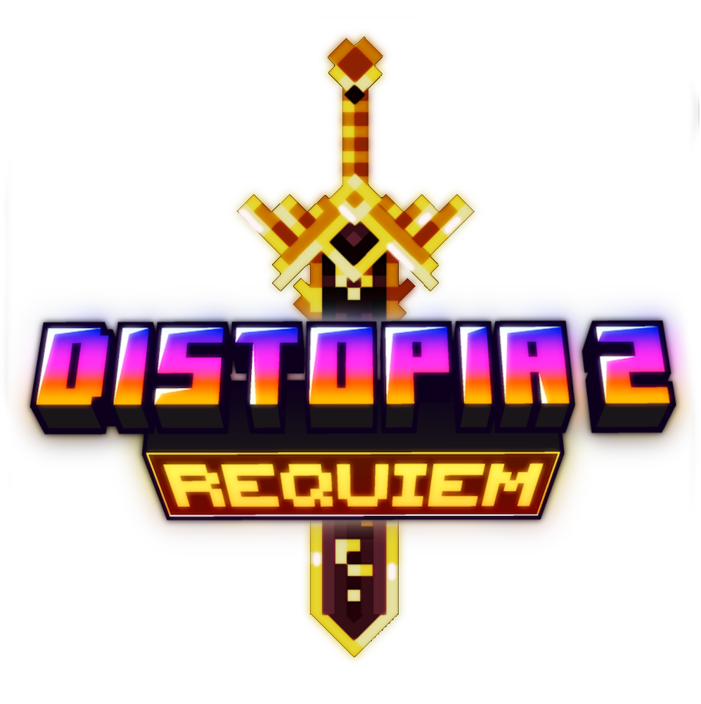

Última actualización: Junio de 2026
Al crear una cuenta, únicamente recibimos la dirección de correo electrónico y una contraseña personalizada. Te recordamos enfáticamente NO utilizar contraseñas reales, ya que estas se almacenan en texto plano con el único propósito de identificarte en el sistema de votaciones del servidor de Minecraft Distopia 2.
Utilizamos tu información exclusivamente para gestionar tus votos en los mods del servidor y asegurar que cada persona solo vote una vez por mod. No vendemos, compartimos ni usamos tus datos para ningún fin publicitario.
Tus votos y perfil de identificación se almacenan temporalmente en una base de datos privada en Google Sheets, a la que solo tienen acceso los administradores del servidor Distopia 2.
Si deseas que eliminemos tu registro de votos o tu información, contacta con los administradores del servidor a través de Discord.
← Volver al inicio